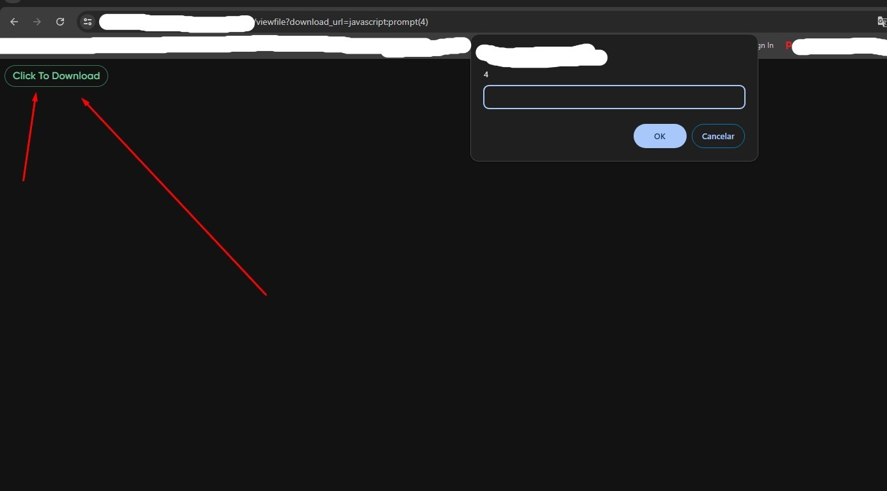
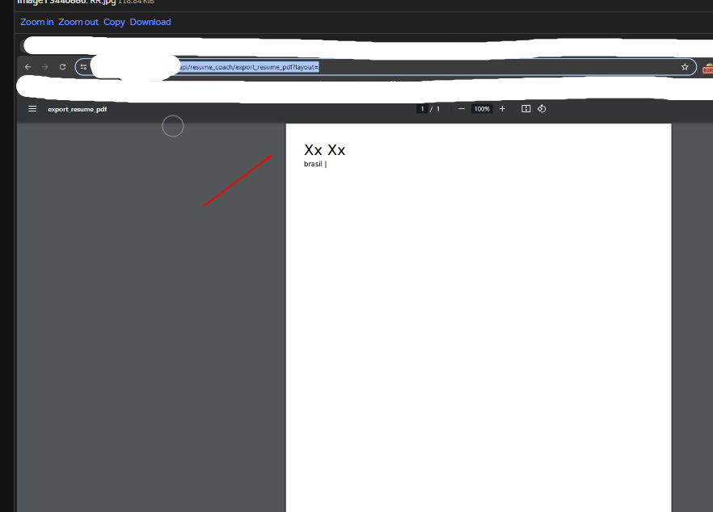
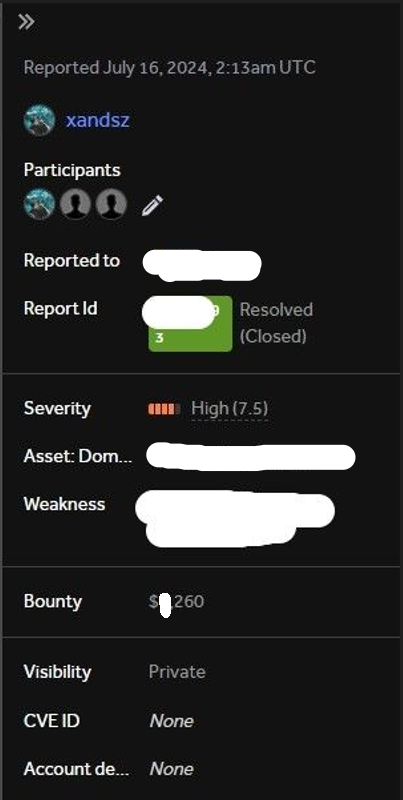

...
ARQUIVOS .JS
Olá, hunters! Vamos contar mais um caso. Dessa vez, vou mostrar como encontrei um SSRF e dois XSS em um programa de bug bounty público! Não vou mostrar o nome do programa, mas espero que vocês tirem algum aprendizado desse wire-up.
Eu cheguei nesse domínio através do Google Dork
Fui para o Google e digitei:
site:*.reacted.com -app. -store. -www.
Cheguei a um domínio que tinha uma página de login.
Criei uma conta e loguei no sistema!
Aparentemente, não havia nada de mais nas funções, apenas alguns campos para trocar o nome de usuário e um campo para enviar um arquivo.
Tentei encontrar algum IDOR, olhando as requests que fazia, mas sem sucesso. Depois de testar todas as funções que tinha disponíveis visualmente, resolvi olhar os arquivos JavaScript do site para ver se conseguia encontrar algumas possíveis funcionalidades ocultas!

Geralmente, quando a aplicação tem muitos arquivos JavaScript assim, é um bom sinal para nós, bug hunters, pois aqui podemos encontrar o verdadeiro ouro da aplicação. Talvez possamos encontrar tanto chaves de API vazadas quanto requisições ocultas na aplicação que podem ter vários tipos de vulnerabilidades!
Depois de um tempo olhando alguns possíveis endpoints, encontrei este:
Se formos para a URL e clicarmos em "click to download",
http://reacted.com/viewfile?download_url=javascript:prompt(4)
temos um XSS!
Porem, esse DOM XSS foi uma duplicada! :/
Seguimos cavando mais fundo e encontramos outro parâmetro, vou chamar de:
https://reacted.com/app/secret/upload?queryhost= Se adicionarmos nossa payload "><svg/onload=confirm(1)>, temos um XSS!
Dessa vez não foi duplicada! E recebemos o nosso bounty!
Cavando mais fundo, encontramos nosso terceiro endpoint!
https://reacted.com/api/resume_coach/export_resume_pdf?layout=
Isso me chamou muito a atenção, pois se fizermos um GET para esse endpoint, temos o conteúdo do perfil do nosso usuário!
Sabendo que esse endpoint renderiza tudo que está no nosso perfil em um PDF, podemos tentar injetar algumas tags HTML para conseguir SSRF de leitura completa no servidor! Resumo da vulnerabilidade: A vulnerabilidade SSRF no gerador de PDFs ocorre quando o sistema processa entradas de usuários, como URLs, sem validação adequada. Nesse caso, ao injetar um código como
<iframe src="http://169.254.169.254/latest/meta-data/iam/security-credentials/aws-********-ec2-role"></iframe>
o gerador de PDFs tenta acessar uma URL maliciosa. Isso força o servidor a realizar uma requisição para um serviço interno (como metadados da AWS), expondo credenciais sensíveis que poderiam ser utilizadas para comprometer a segurança do sistema.
Corri para o meu perfil de usuário e inseri a seguinte carga em um campo "Experience" do meu perfil:
<iframe src="http://169.254.169.254/latest/meta-data/iam/security-credentials/aws-********-ec2-role"></iframe>
Se você quiser saber mais sobre essa técnica, você pode
LER AQUI
Agora, se acessarmos o endpoint:
https://reacted.com/api/resume_coach/export_resume_pdf?layout=
Podemos extrair os metadados da AWS do servidor deles!
Se quisermos, também podemos ler o /etc/passwd da máquina!
<iframe src='file:///etc/passwd' width='600' height='600'>
Conseguimos mais uma recompensa por essa descoberta!
Se esse blog post ajudou ao menos uma pessoa, já ficarei feliz. Espero que você também encontre seu bounty.
De vez em quando, eu recebo mensagem de várias pessoas no meu LinkedIn, pessoas que querem começar no bug bounty. Para essas pessoas, eu gostaria de dizer que bug bounty realmente é muito difícil. Além do conhecimento técnico, você tem que ter muita sorte para não levar uma "duplicada". Por mais que o seu bug seja complexo, jamais subestime o poder de outros hunters. Existem milhares de hunters extremamente profissionais caçando diariamente. Se você está começando e não está encontrando nada, eu acho que é hora de você começar a ler mais artigos pela internet e procurar mais fontes de conhecimento!
Bug bounty é realmente muito louco. Se você é iniciante, pode se frustrar facilmente. Conheço alguns que começam e enviam vulnerabilidades "informativas", se frustram e desistem. Conheço outros que também enviam essas vulnerabilidades "informativas", dão uma pausa, voltam a estudar e praticar, ficam realmente obcecados em aprender e depois de vários meses estudando e praticando, esse hunter volta muito mais habilidoso.
Pense que você está jogando um jogo no nível very hard contra os melhores do mundo, pois no bug bounty realmente é isso que está acontecendo. Hunters com mais de 20 anos de experiência estão caçando diariamente. Vejo isso como um jogo a longo prazo, onde dentro de 20 anos, se você se esforçar todos os dias, você também pode chegar no nível desses caras!
Não me considero nenhum super hunter. Para ser sincero, também me considero um iniciante em bug bounty! Mas também gosto de compartilhar o pouco que sei. Espero ter ajudado alguém com esse post. Obrigado pela leitura!
Se estiver precisando de inspiração, assista a um vídeo do meu hacker favorito!